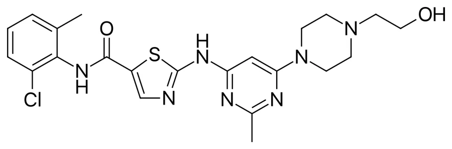
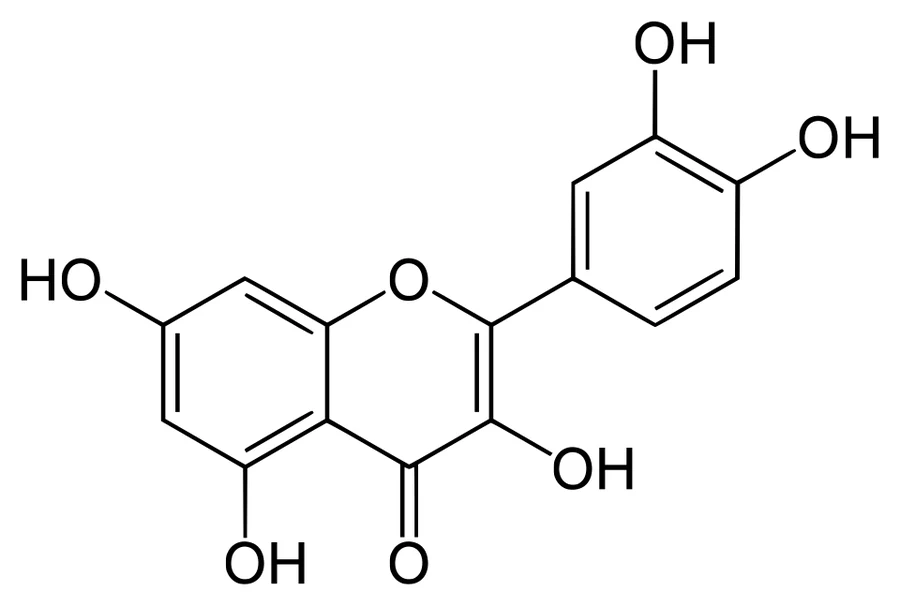
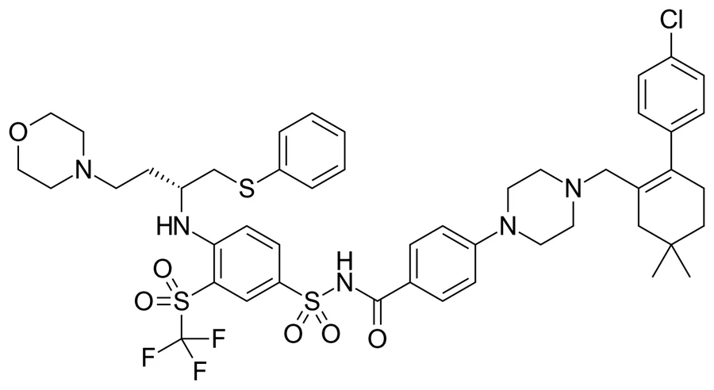
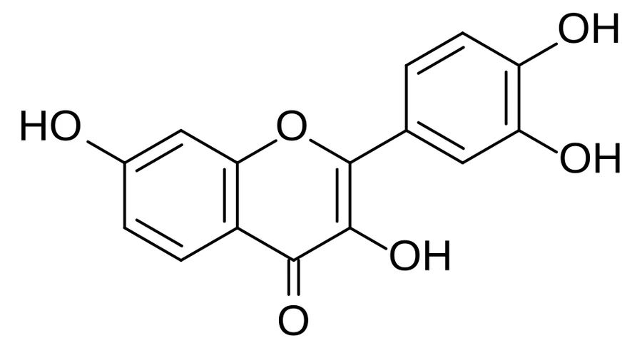
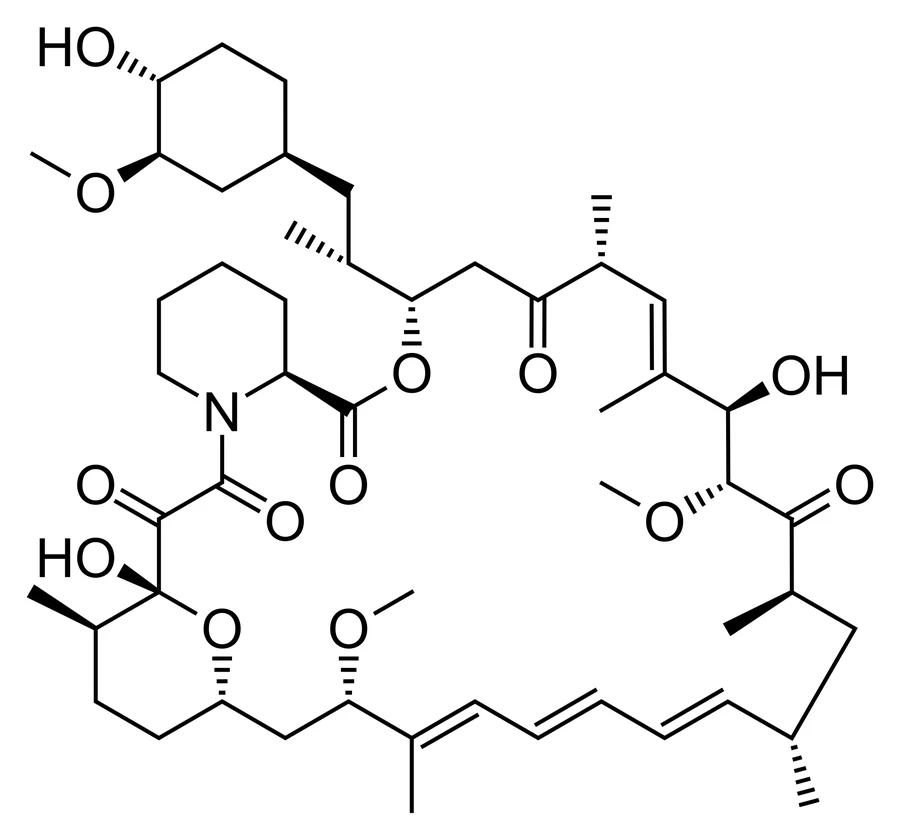
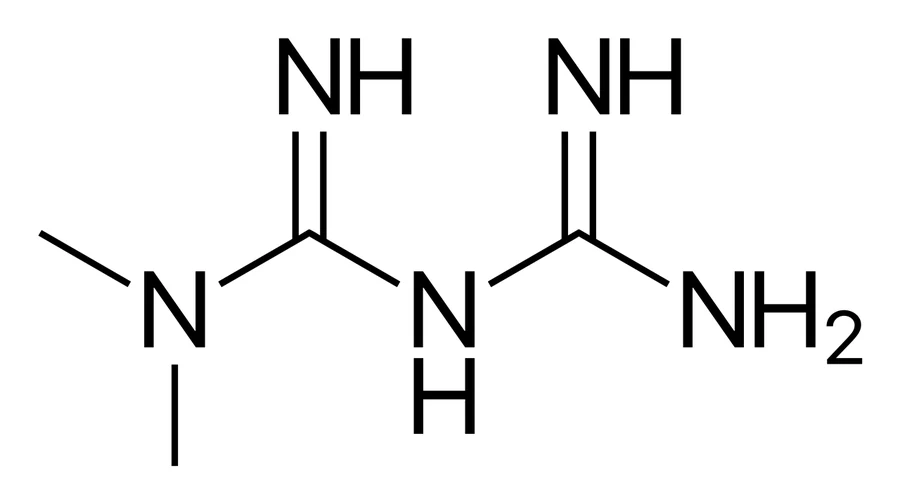

Два подхода к клеточному старению — избирательно убить стареющие клетки или заглушить их вредную секрецию. Механизмы, ключевые препараты, статус клинических испытаний и честные ограничения.
С возрастом в тканях накапливаются сенесцентные (стареющие) клетки — они необратимо вышли из клеточного цикла, но не погибли. Устойчивы к апоптозу за счёт про-выживательных путей, в первую очередь белков семейства BCL-2/BCL-xL.
Главная проблема не в самой остановке деления, а в SASP (senescence-associated secretory phenotype) — «секреторном фенотипе, ассоциированном со старением». Стареющие клетки выделяют коктейль провоспалительных цитокинов, хемокинов и протеаз, который:
Сенесцентные клетки и их SASP признаны драйверами широкого спектра патологий: фиброза лёгких, диабетической болезни почек, остеоартрита, атеросклероза, нейродегенерации (включая болезнь Альцгеймера) и общей возрастной хрупкости (frailty). Отсюда — две принципиально разные терапевтические идеи.
Обе не исключают друг друга и всё чаще рассматриваются как взаимодополняющие. Разница — в том, убираем мы саму клетку или только её вредную секрецию.
| Что делают | Избирательно убивают сенесцентные клетки |
| Мишень | Про-выживательные пути: BCL-2/BCL-xL, PI3K/AKT, тирозинкиназы |
| Режим | Периодический, «ударил и ушёл» (hit-and-run): пара дней, затем перерыв |
| Плюс | Клетка убрана — эффект держится, пока не накопится снова |
| Минус | Риск задеть нужные клетки, off-target токсичность |
| Что делают | Не трогают клетки, но глушат вредный SASP |
| Мишень | Сигнальные пути SASP: mTOR, NF-κB, JAK/STAT |
| Режим | Как правило постоянный, хронический приём |
| Плюс | Обратимость, тонкая настройка, можно давать постоянно |
| Минус | Убирают симптом, а не источник; нужен постоянный приём |
Сенесцентные клетки выживают, включая анти-апоптотические сети (SCAP). Сенолитик кратковременно отключает эти сети — и клетка, балансирующая на грани, срывается в апоптоз. Здоровые клетки, не зависящие от этих путей, страдают меньше.


Первая и наиболее изученная у человека сенолитическая комбинация. Дазатиниб — ингибитор тирозинкиназ (изначально онкопрепарат при лейкозах), кверцетин — растительный флавоноид, ингибитор PI3K/AKT. По отдельности слабее; вместе перекрывают более широкий спектр стареющих клеток.
| Схема | 100 мг дазатиниба + 1000–1250 мг кверцетина, 2–3 дня подряд, затем перерыв («2 дня приёма, 5 отдыха») |
| IPF (фиброз лёгких) | Первое в истории клиническое исследование сенолитиков; улучшение 6-мин ходьбы и физической функции |
| Диабет. болезнь почек | Подтверждено снижение сенесцентных клеток в жире (p16, SA-β-gal) и системного воспаления |
| MCI / Альцгеймер | Фаза 1 (SToMP-AD, STAMINA): подтверждена проникаемость дазатиниба в ЦНS; в STAMINA снижение TNF-α коррелировало с ростом MoCA (r=−0.65, p=0.02). Идёт RCT фазы 2 |
| Кости / остеопороз | Фаза 2 (Mayo Clinic, NCT04313634): в целом по группе значимого эффекта нет, но у ответивших — рост плотности кости лучевой к 20-й неделе, сдвиг маркёров P1NP/CTx |
| Психиатрия | 2025 — протокол пилота при шизофрении и резистентной депрессии (NCT05838560) |
| Новые фазы 2 | Идут/запускаются: болезнь Альцгеймера (RCT), рассеянный склероз (SPMS), NAFLD/фиброз печени, датское SENIOR по остеопорозу |

Бьёт точно в главный механизм выживания стареющих клеток, поэтому в лаборатории очень эффективен. Убедительные доклинические данные: очищает клетки в моделях остеоартрита, фиброза, истощения стволовых клеток.
| Обход токсичности | Разрабатывают производные, щадящие тромбоциты: PROTAC-деградеры BCL-xL (DT2216, PZ15227) и галактозо-конъюгаты (Nav-Gal), активные преимущественно в сенесцентных клетках |
| Комбинации | Навитоклакс + руксолитиниб одобрен и эффективен при миелофиброзе — но тромбоцитопения остаётся главным дозолимитирующим эффектом |

Природный флавоноид (клубника, яблоки). В доклинике убирает стареющие клетки и снижает маркёры старения. Идёт серия исследований, преимущественно в Mayo Clinic: AFFIRM/AFFIRM-LITE (хрупкость), остеоартрит колена, STOP-Sepsis (сепсис), пилоты по COVID-19.
| Доза в испытаниях | 20 мг/кг/сут в течение 2 дней |
| Оговорка | На 2025 г. опубликованных данных о клиренсе клеток у человека фактически нет — многие исследования не расслеплены |
Отдельная стратегия — доставлять сенолитик только в поражённую ткань. UBX0101 (ингибитор MDM2/p53) в колено при остеоартрите не показал эффективности в фазе 2. UBX1325/foselutoclax (ингибитор BCL-xL) — интравитреально при диабетическом макулярном отёке и AMD — дал более обнадёживающие данные.
Сеноморфики (они же сеностатики) не убивают клетку, а подавляют или перенастраивают её вредный SASP. Точная формулировка из обзоров 2024–2026: они снижают SASP «не обязательно удаляя сами клетки» — клетка остаётся жизнеспособной. При этом они могут влиять на её состояние: например, рапамицин сохраняет остановку клеточного цикла. Мишени — сигнальные узлы SASP: mTOR, NF-κB, JAK/STAT, а также p38 MAPK.

Подавляет комплекс mTORC1 — снижает трансляцию SASP-факторов и хроническое воспаление. В низких «геропротекторных» дозах менее иммуносупрессивен, чем в трансплантологических.

Активирует AMPK, влияет на SIRT1 и mTORC1, снижает окислительный стресс и приглушает NF-κB (снижает RELA/p65), тем самым гася SASP. Ретроспективы намекали на увеличение продолжительности жизни у диабетиков — это легло в основу знаменитого испытания TAME (Targeting Aging with Metformin).
Путь JAK/STAT — ключевой усилитель SASP. Ингибиторы JAK подавляют секрецию провоспалительных цитокинов стареющими клетками. В доклинике руксолитиниб уменьшал SASP, смягчал сенесценцию кардиомиоцитов при септической кардиомиопатии (через блок JAK2/STAT3), а в моделях ХОБЛ обращал вспять сенесценцию, эмфизему и фиброз. Сами препараты уже одобрены по другим показаниям (миелофиброз, ревматоидный артрит), что упрощает перепрофилирование.
Прямой ответ на исходный вопрос: обе стратегии реальны, работают через разные мишени и всё чаще рассматриваются как взаимодополняющие, а не конкурирующие.
| Препарат | Класс | Мишень | Продвинутые показания | Статус |
|---|---|---|---|---|
| Dasatinib + Quercetin | Сенолитик | Тирозинкиназы + PI3K/AKT | IPF, диабет. болезнь почек, MCI/Альцгеймер, психиатрия | Подтверждён клиренс клеток у человека; идёт фаза 2 |
| Navitoclax (ABT-263) | Сенолитик | BCL-2/BCL-xL/BCL-w | Остеоартрит, фиброз (доклиника); онкология | Ограничен токсичностью; идут производные 2-го поколения (PROTAC DT2216, Nav-Gal) |
| Fisetin | Сенолитик | Флавоноид (мультитаргет) | Хрупкость, остеоартрит, сепсис | Идут фазы 2; клиренса у человека пока нет |
| UBX1325 (foselutoclax) | Локальный сенолитик | BCL-xL | Болезни сетчатки (DME, AMD) | Позитивные ранние данные; спонсор (UNITY) ликвидирован в 2025 |
| Рапамицин / рапалоги | Сеноморфик | mTORC1 | Геропротекция, иммунное старение | Активно изучается; известный профиль безопасности |
| Метформин | Сеноморфик | AMPK / NF-κB | Общее старение (TAME) | Широко доступен; геропротекция у недиабетиков спорна |
| Ингибиторы JAK | Сеноморфик | JAK/STAT | Воспалительные и фиброзные модели | Ранняя трансляционная стадия |
Статус меняется быстро. Перед практическими выводами сверяйтесь с ClinicalTrials.gov и свежими публикациями.
Сенолитик убивает стареющую клетку целиком (снимает её защиту от апоптоза — и она самоуничтожается). Сеноморфик клетку оставляет живой, но глушит её вредную секрецию (SASP). Первый — «удалить источник», второй — «заткнуть источник». Их можно комбинировать.
Эффект нужен только в момент «толчка в апоптоз»: сенолитик кратко отключает про-выживательную сеть, клетка гибнет — и дальше препарат не нужен, пока клетки снова не накопятся (недели). Такой режим hit-and-run резко снижает токсичность по сравнению с постоянным приёмом того же дазатиниба в онкодозах.
Нет. У человека доказано более узкое: D+Q снижает число сенесцентных клеток и маркёры воспаления (диабетическая болезнь почек), а также улучшает физическую функцию при фиброзе лёгких в пилотах. Влияние на продолжительность жизни или твёрдые клинические исходы — предмет продолжающихся исследований фазы 2, вывода о «продлении жизни» пока нет.
Дозы и комбинации в исследованиях (например, 1000–1250 мг кверцетина с рецептурным дазатинибом, или 20 мг/кг фисетина) — это не то же самое, что бытовой приём добавки. Сенолитическая активность в таких схемах изучена недостаточно, а дазатиниб вообще рецептурный онкопрепарат. Это тема для клинических исследований или наблюдения врача, а не самолечения (см. дисклеймер).
Компания разрабатывала локально доставляемые сенолитики. Её препарат для колена (UBX0101) провалил фазу 2, глазной UBX1325 давал более обнадёживающие данные — но в сентябре 2025 г. акционеры одобрили ликвидацию компании. Это показатель того, что научный интерес и коммерческий успех в этой области — разные вещи.
Подборка рецензируемых публикаций и протоколов, на которых основан обзор.
Для актуального статуса: ClinicalTrials.gov · PubMed